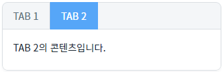
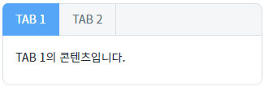
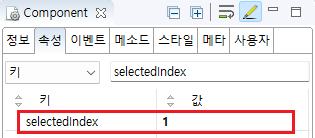

TabControl의 'selectedTabIndex' 속성을 사용하여 컴포넌트가 로드될 때 선택될 탭을 설정한 예제입니다.
'selectedTabIndex' 속성을 사용하여 탭 선택하기
예제 영역 'selectedIndex : 1'에서 테스트합니다.1
실행된 결과를 확인합니다.
TabControl에 'TAB1', 'TAB2' 탭이 구성되어 있고, 'TAB2' 탭이 선택된 상태입니다.
Image 1.브라우저(Chrome) 실행 예시

예제 영역 'selectedIndex : 0'에서 테스트합니다.1
실행된 결과를 확인합니다.
TabControl에 'TAB1', 'TAB2' 탭이 구성되어 있고, 'TAB1' 탭이 선택된 상태입니다.
Image 2.브라우저(Chrome) 실행 예시

TabControl의 속성을 설정합니다.
[필수] selectedIndex="탭의 인덱스"
설정 예시) 첫 번째 탭을 선택하는 경우
selectedIndex="0"
Image 3.웹스퀘어 스튜디오의 Component View - 속성 설정 예시

Example 1.Source
<!-- selectedIndex를 1로 설정해 두 번째 탭으로 시작하도록 설정 --> <w2:tabControl selectedIndex="1"> <!-- 중략 --> </w2:tabControl>
selectedIndex